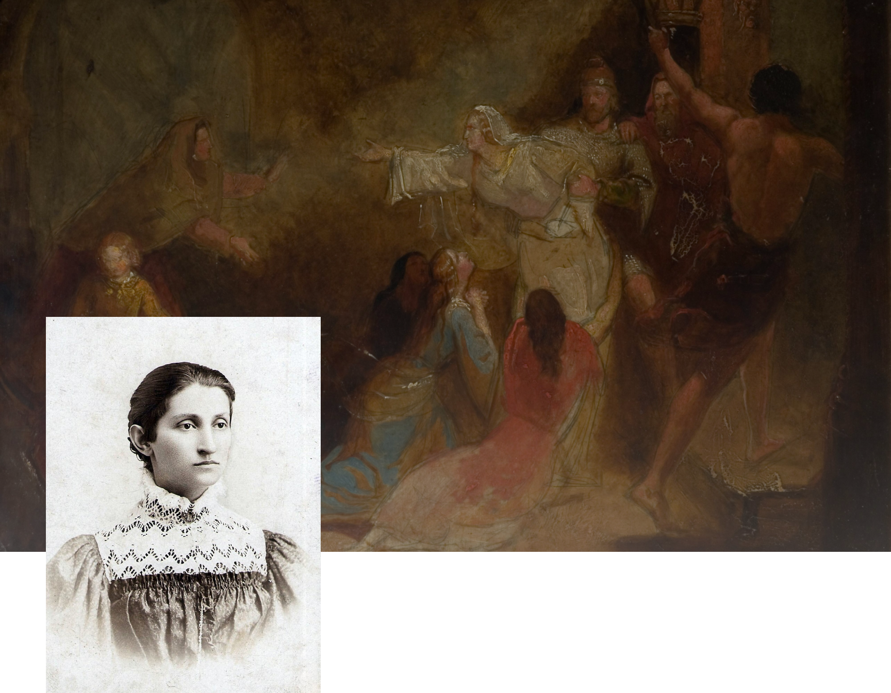
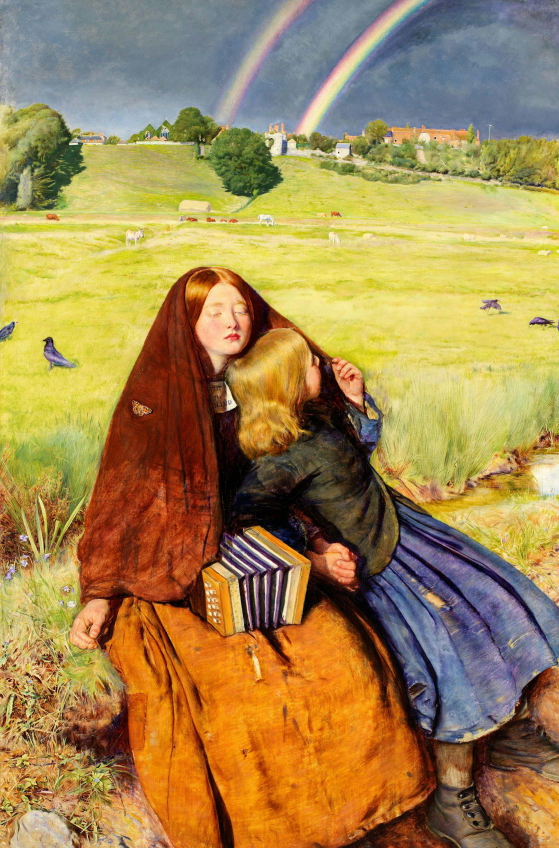

Ольга
Кобилянська
Українська письменниця-модерністка, рання буковинська феміністка, близька подруга Лесі Українки. Авторка повістей та оповідань про проблеми українського жіноцтва та буковинського села. Одна з найважливіших постатей раннього модернізму в українській літературі.
Біографія

Моменти, що формують

Ольга Юліанівна Кобилянська народилася 27 листопада 1863 року в містечку Ґура-Гумора в Південній Буковині четвертою із семи дітей.
Батько, дрібний урядовець Ю.Я.Кобилянський, належав до шляхетного роду з Наддніпрянщини,але юридично це не було затверджено.Мати, М. Й. Вернер, походила зі спольщеної німецької родини. З любові до чоловіка Марія Вернер вивчила українську мову, прийняла греко-католицьку віру та виховувала всіх дітей у пошані та любові до українства. Ольга дуже любила і глибоко шанувала матір, називала її «наша лагідна „Свята Анна“».
1881 року до Кимполунгу приїжджає лікар Атанасій Окуневський з 17-річною дочкою Софією Окуневською, з якою Ольга починає приятелювати. «Заговорила до мене українською мовою, переконуючи, що мені треба писати не по-німецьки, а для свого народу — по-українськи, навчила фонетикою писати, надавала українських книжок», — згадує Кобилянська в автобіографії.
У 1883
У 1899
Окуневська знайомить Кобилянську з феміністкою, організаторкою жіночого руху на Буковині та письменницею Наталією Кобринською, чия особистість дуже вплине на формування поглядів Кобилянської
М. Павлик знайомить листовно Кобилянську з Лесею Українкою. На запрошення Косач Кобилянська приїздить до неї на Полтавщину, а через два роки поетеса була гостею Кобилянської в Чернівцях. Леся Українка відіграла значну роль у творчому зростанні письменниці. Між письменницями укладаються плідні стосунки, відображені як у їх творчості, так і в листуванні, що набуває інтимного характеру.
бмінюючись ідеями та світоглядом, Кобилянська та Косач разом створили новий образ жінки: жінки-інтелігентки, борчині за свої права та рівність.
У 1903 році, у розквіті таланту Кобилянська застудилася, внаслідок чого розвинувся частковий параліч
Це позбавило письменницю широкої можливості особисто спілкуватися з друзями-митцями, з народом. Хвороба, смерть батька та матеріальна скрута спричинили творчий спад: «Моє життя ніколи не було веселим, а тепер воно доходило до кульмінаційного пункту».
У 1940 році, її прийняли до Спілки радянських письменників України, паралельно змушена написати «партійне» за риторикою привітання приходу радянської влади на Буковину для альманаху «Вільна Буковина»
1941
Письменниця не змогла евакуюватися з Чернівців. Румунський уряд дав розпорядження передати письменницю військовому суду.
Наміри румунів залишилися нездійсненими, бо 21 березня 1942 року 78-річна Ольга Кобилянська померла.

“Царівна”
Феміністичні мотиви в повісті Ольги Кобилянської «Царівна» є однією з головних тем, яка відображає прагнення авторки до переосмислення ролі жінки в суспільстві кінця XIX століття. Цей твір є знаковим для української літератури, оскільки демонструє новий тип героїні – вільної, незалежної та освіченої жінки, яка протистоїть соціальним стереотипам і бореться за своє право на самостійність та самореалізацію.

Повість Ольги Кобилянської "Царівна" розповідає про духовне й особистісне становлення Наталки Веркович, молодої дівчини із зубожілої інтелігентної родини. Вихована в атмосфері любові до освіти та високих ідеалів, Наталка мріє про свободу і самореалізацію, хоча суспільство очікує від неї лише шлюбу.
Залицяння чоловіків, які бачать у ній лише майбутню дружину і господиню, викликають у неї розчарування. Вона прагне до рівноправного партнерства та духовної спорідненості, проте зустрічає нерозуміння навіть серед інтелігентів. Незважаючи на любов до одного з них, Наталка усвідомлює, що не готова зректися своїх мрій.
Відкидаючи традиційні ролі, вона обирає шлях боротьби за свої права та гідність. Внутрішня сила допомагає їй не зламатися під тиском оточення і залишитися вірною собі. У фіналі Наталка робить вибір на користь самостійності, що символізує нову роль жінки в суспільстві. Її історія — це маніфест жіночої емансипації та права на духовну свободу.
Пошук ідеалу «нової жінки»
Героїня твору Наталка Веркович символізує «нову жінку», яка прагне більшого, ніж традиційні ролі дружини і матері. Вона шукає сенсу життя у власній духовній та інтелектуальній реалізації. В Наталки проявляється потреба у самопізнанні й свободі, що повністю протирічить тодішнім поглядам на «правильну» жіночу роль у суспільстві.
Критика патріархального суспільства
Кобилянська показує, як патріархальні структури обмежують можливості жінок, змушуючи їх приймати роль, яку диктує суспільство. Чоловіки в творі часто представлені як носії традиційних уявлень про жінок, що їх місце – це дім і сім'я. Наталка ж, навпаки, має сміливість заперечувати ці традиції, зберігаючи свою незалежність і гідність.
Становлення особистої ідентичності
Центральний конфлікт для героїні полягає в її прагненні до самореалізації та внутрішнього розвитку. Наталка обирає шлях, який дозволяє їй зрозуміти себе як особистість, незалежну від очікувань суспільства чи шлюбних зобов'язань. Її рішення не поспішати з вибором чоловіка, а натомість розвивати власні здібності та знання, є відображенням феміністичних ідей особистої ідентичності та самодостатності.